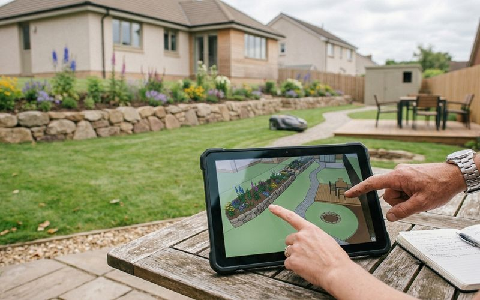
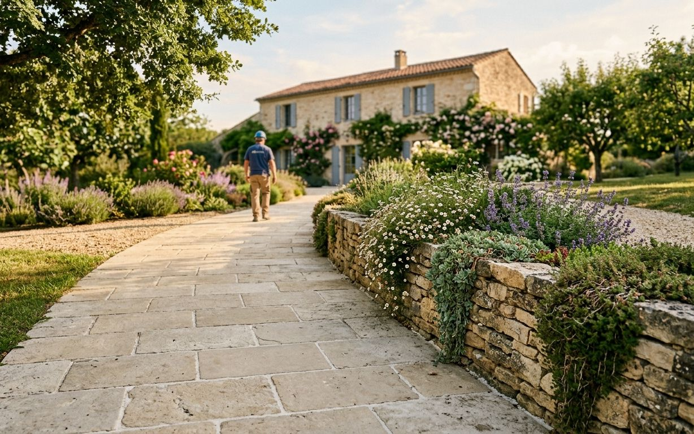
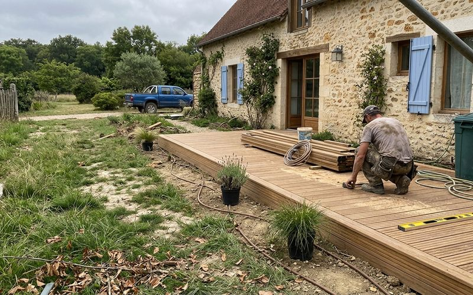
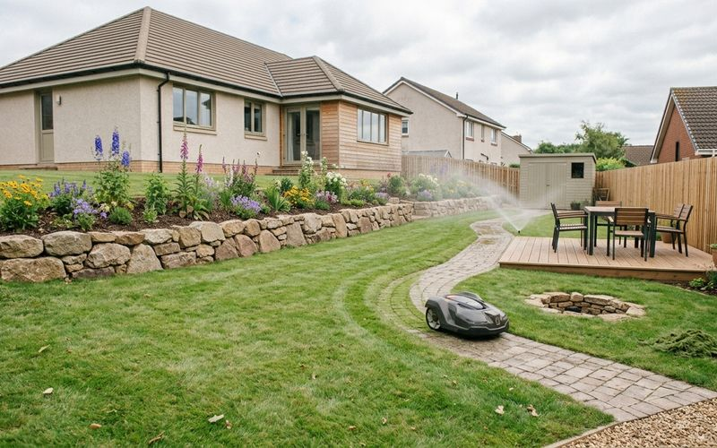
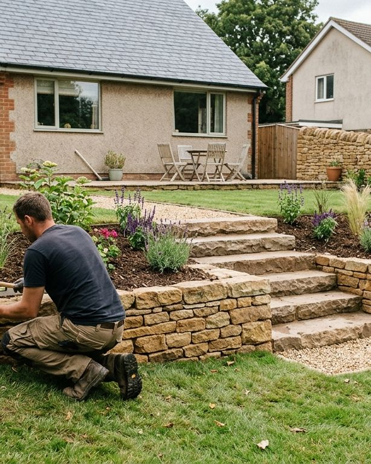
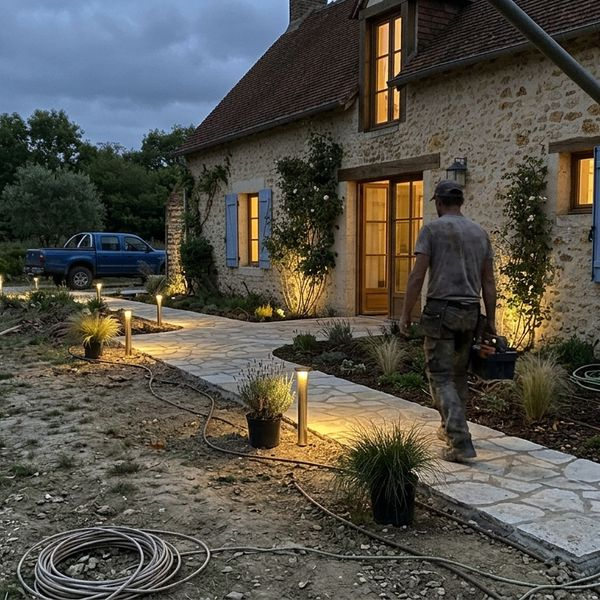
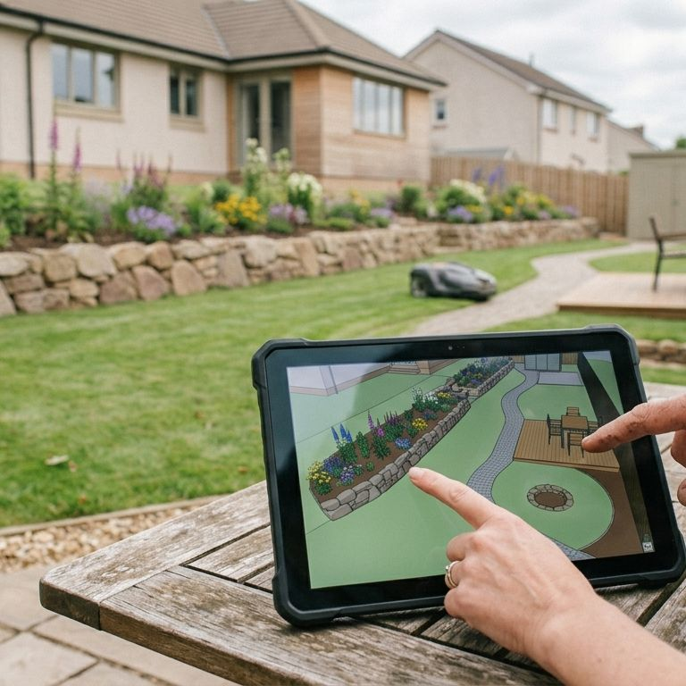

Création d’espaces verts
Plantations, massifs et aménagement du jardin selon votre projet.
En savoir plus →
Choisissez comment l’envoyer. Rien n’est transmis tant que vous n’avez pas validé l’envoi.
Nos prestations
Création, aménagement et entretien d’espaces verts, selon votre projet.

Plantations, massifs et aménagement du jardin selon votre projet.
En savoir plus →

Tonte de pelouse, débroussaillage et entretien régulier du jardin.
En savoir plus →À propos
D&F Paysages exerce dans les services d’aménagement paysager, depuis son siège à Brunoy, dans l’Essonne.
L’entreprise est dirigée par Victor Jorge.
Découvrir l’entreprise


Contact
Décrivez votre projet en quelques lignes, puis choisissez comment nous l’envoyer.
D&F Paysages · Brunoy (91)
© D&F Paysages · Brunoy (91) · Maquette de démonstration